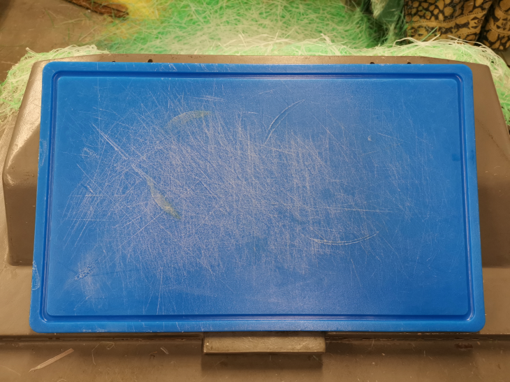
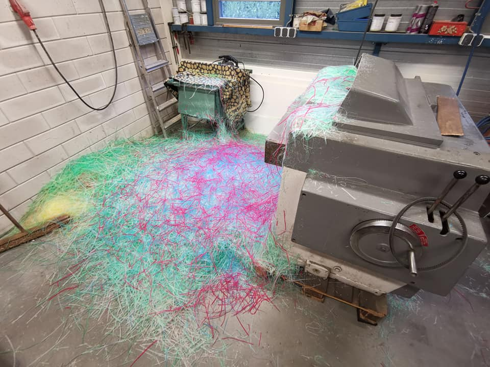
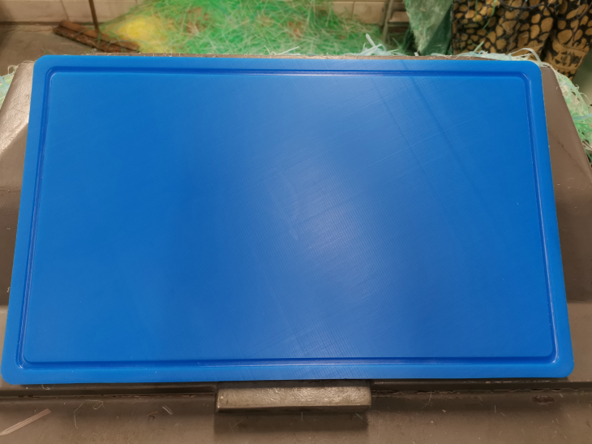

De slijper voor al uw messen.
078 682 4977
info@horecaslijperijbloom.nl

SNIJPLANK VLAKKEN
Intensief gebruik van uw kostbare (kunststof) snijplanken veroorzaakt krassen. In deze krassen kunnen zich ongewenste bacteriën verzamelen. Voor een scherpe prijs kunnen wij uw snijplanken weer krasvrij maken, door deze te vlakken, zodat deze weer aan de HACCP normen voldoen. De snijplanken kunnen wij niet op locatie vlakken, maar deze nemen wij mee naar onze vestiging in Hendrik-Ido-Ambacht. In de tijd dat wij uw snijplanken vlakken, ontvangt u onze leenplanken, zodat het werk gewoon door kan gaan.

